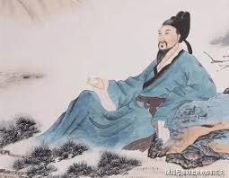

Confucian Thoughts
|
|
Confucianism, one of the core philosophies of traditional Chinese culture,
was founded by Confucius and has been passed down and developed through the generations to form
a far-reaching system of thought.
With “benevolence” as its core, it emphasizes moral cultivation,
social responsibility and harmony between the family and the nation,
and has had a profound impact on Chinese history, social systems, ethics and personal codes of
conduct.
The basic concepts of Confucianism include the five virtues of benevolence, propriety,
righteousness, wisdom and trust, as well as the concern for social order.
In China, Confucianism became the ruling ideology of feudal society and shaped
the bureaucratic and legal systems of ancient China.
Confucianism established ethical concepts such as filial piety and loyalty to the ruler, and
shaped family and social relations.
The imperial examination system promoted the popularization of Confucianism by using Confucian
classics as examination content.
|
Chinese Poetry
|

|
Ancient Chinese poetry is a treasure of Chinese culture,
and along with the development of history it has experienced an evolutionary process from the
simplicity and romance of the Classic of Poetry and the Chu Rhetoric to the peak of poetry in
the Tang Dynasty,
and then to the euphony and grandeur of the Song lyrics, and the popularization and artistic
variety of the Yuan operas.
With its condensed language, rich emotions and unique mood, poetry expresses profound thoughts
on nature, life and society, showing rich layers from individual mind to national sentiment.
It is not only an important carrier for expressing feelings and aspirations, but also a cultural
mirror for recording social reality, and still exudes a constant charm in world literature.
|
Chinese Calligraphy
|
|
Chinese calligraphy is a unique art form in Chinese culture, which is a perfect
combination of writing and artistic aesthetics.
It originated from the creation and development of Chinese characters, from oracle bone script
and gold script to seal script and official script,
and then to regular script, running script and cursive script, various fonts have been gradually
enriched with the evolution of history, displaying unique artistic charm.
Calligraphy not only emphasizes the structure of characters and the rhythm of strokes, but also
pursues vividness and far-reaching meaning,
reflecting the concepts of “unity of heaven and mankind” and “mediocrity and harmony” in Chinese
philosophy.
Famous calligraphers such as Wang Xizhi of the Eastern Jin Dynasty, famous for his Lanting
Preface, is known as the “Sage of Calligraphy”;
Yan Zhenqing and Liu Gongquan of the Tang Dynasty laid the foundation of standardized
calligraphy with their majestic and upright regular scripts.
Calligraphy, as an important symbol of traditional Chinese culture, is not only
a writing skill, but also a way to cultivate one's body and spirit,
and has conveyed the essence of culture and thought to people for thousands of years.
|
Chinese Painting
|
|
Chinese painting is a unique painting art of the Chinese nation, using brushes and
rice paper as the main tools and materials, and integrating Chinese philosophy, aesthetics and
cultural ideas. It is an important representative of traditional Chinese art. Chinese painting
has a long history of origin, and through its historical development, it has formed three major
thematic painting disciplines: landscapes, figures, and birds and flowers. The creation of
Chinese painting emphasizes “writing God in form”, focusing on the expression of subjective
emotions and the harmony of natural scenery, and emphasizing the creation of mood rather than
the mechanical reproduction of objective reality.
The techniques of Chinese painting include two styles: brushwork, which is fine
and realistic and is commonly seen in ancient court paintings, and freehand, which is more
lyrical and expresses meaning with concise ink and brushwork. Famous painters such as Gu Kaizhi
of the Eastern Jin Dynasty, whose “Women's History” embodies the essence of figure painting;
Jing Hao and Guan Tong of the Fifth Generation created the majestic style of landscape painting
in the north; Fan Kuan and Guo Xi of the Northern Song Dynasty pushed landscape painting to its
peak, showing the “soul of mountains and rivers”. Meanwhile, bird and flower paintings such as
Cui Bai in the Song Dynasty and Bada Shanren in the Ming and Qing Dynasties use fresh and
elegant brushstrokes to outline the beauty of nature.
Chinese painting is not only a visual art, but also a comprehensive expression
of the integration of poetry, calligraphy, painting and printing. It shows infinite heaven and
earth and feelings through limited ink and brushwork, carries the Chinese people's profound
thinking about nature, life and the universe, and is a vivid embodiment of the spirit of Chinese
culture.
|
Chinese Opera
|
|
Chinese opera is a treasure of traditional Chinese art, a comprehensive stage art
form integrating literature, music, dance, performance and fine arts. It originated from
primitive songs and dances and folk raps, and through thousands of years of development, it has
gradually formed a variety of styles represented by Beijing Opera, Kunqu, Yueju Opera, Huangmei
Opera, Yu Opera, etc., and has become one of the important symbols of Chinese culture.
Opera is characterized by virtuality and programming. The stage sets and props
are extremely simple, but time, space and plot are skillfully presented through the highly
artistic performances of the actors. Based on the “four skills” of singing, reciting, acting and
playing, and in conjunction with face painting, costumes and unique musical accompaniment (such
as gongs, drums and strings), the actors show the characters' personalities and emotions. The
singing style varies according to the type of opera, such as the high and melodious voice of
Peking Opera and the soft and elegant voice of Kunqu Opera, all of which have a high aesthetic
value.
Chinese opera is not only a form of art and entertainment, but also a
concentration of national history and culture. Its content covers historical stories, folk
legends and social life, and conveys traditional values such as loyalty, filial piety,
patriotism and righteousness. As an intangible cultural heritage, Chinese opera carries the
spiritual world and cultural memories of the Chinese people, and still glows with unique
artistic charms on the modern stage and in international exchanges.
|